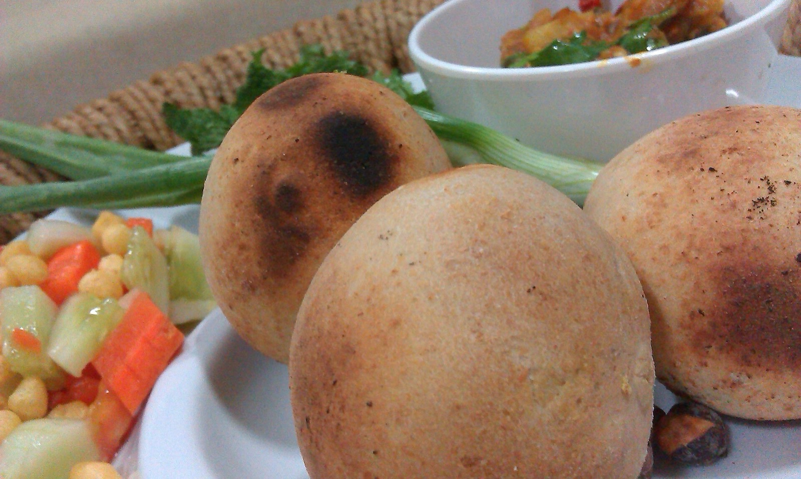
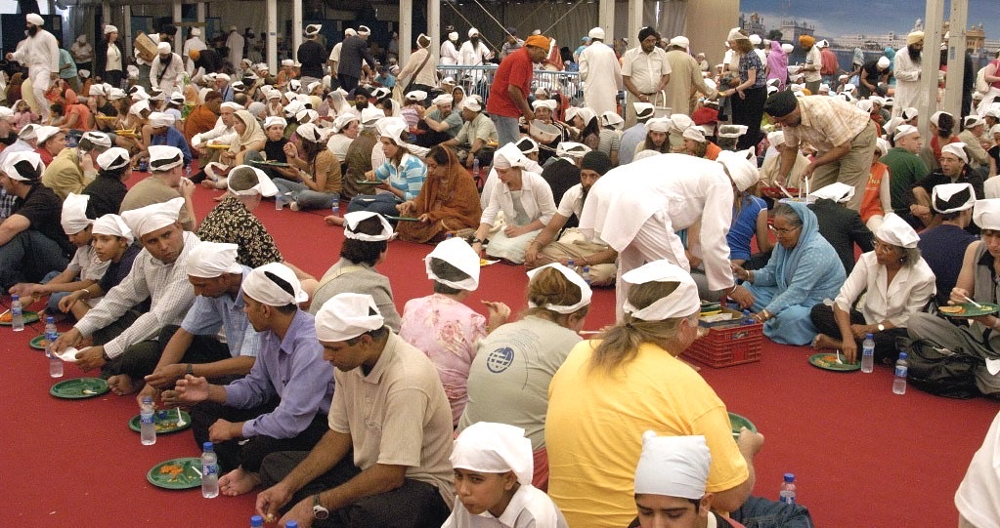
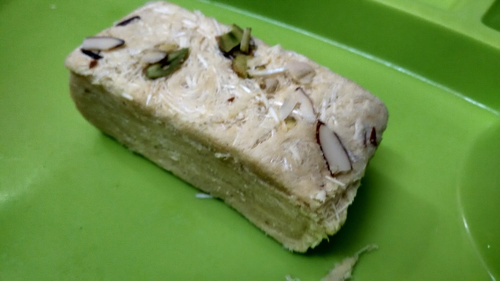
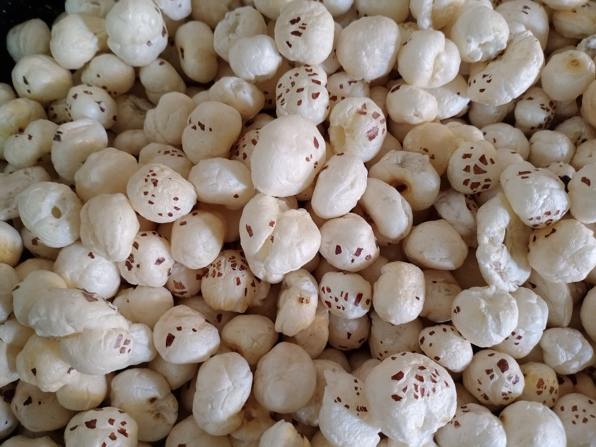

Famous food of Bihar
What to eat while visiting places to visit in Bihar
Bihar food is simple, roasted, and built around sattu, rice, lentils, and sweets tied to towns. Visitors planning Bihar tourism usually start with litti chokha — roasted wheat balls stuffed with spiced gram flour, served with mashed potato, brinjal, and tomato. It is inexpensive, vegetarian, and easy to find in Patna near Golghar and along the Ganga.
Other famous Bihar foods include Maner laddoo, Buxar and Munger soan papdi, Silao khaja, Shahi litchi, and mithila makhana (fox nuts). At Takhat Sri Harmandir Ji in Patna, langar is a free vegetarian meal open to every visitor on the Sikh circuit.

Litti chokha
Bihar's signature dish: roasted sattu-stuffed wheat balls with mashed spiced vegetables, widely served in Patna.

Langar at Patna Sahib
Simple vegetarian meals at Takhat Sri Harmandir Ji, open to every visitor.

Soan papdi
A flaky gram-flour sweet associated with Buxar and Munger on the Ramayan circuit.

Maner laddoo & GI foods
Maner's famous laddoo, plus mithila makhana, Shahi litchi, and Silao khaja.
Bihar food FAQs
What is litti chokha?
Litti chokha is roasted whole-wheat balls stuffed with spiced sattu, eaten with mashed vegetables. It is the Bihar food most visitors look for first.
Where should tourists eat in Bihar?
Patna is the simplest base for litti chokha and Maner laddoo. Combine meals with places to visit in Bihar such as Golghar and Patna Sahib. Try soan papdi if you travel west toward Buxar.